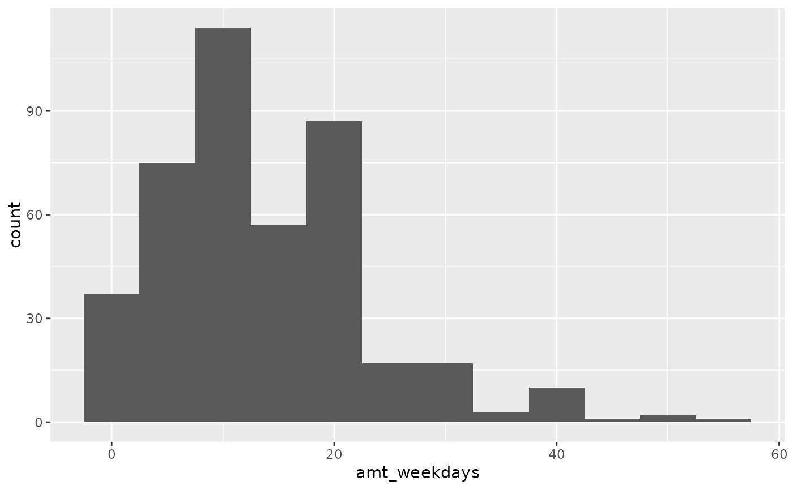

Survey data on smoking habits from the UK. The data set can be used for analyzing the demographic characteristics of smokers and types of tobacco consumed.
smoking
Format
A data frame with 1691 observations on the following 12 variables.
- gender
Gender with levels
FemaleandMale.- age
Age.
- marital_status
Marital status with levels
Divorced,Married,Separated,SingleandWidowed.- highest_qualification
Highest education level with levels
A Levels,Degree,GCSE/CSE,GCSE/O Level,Higher/Sub Degree,No Qualification,ONC/BTECandOther/Sub Degree- nationality
Nationality with levels
British,English,Irish,Scottish,Welsh,Other,RefusedandUnknown.- ethnicity
Ethnicity with levels
Asian,Black,Chinese,Mixed,WhiteandRefusedUnknown.- gross_income
Gross income with levels
Under 2,600,2,600 to 5,200,5,200 to 10,400,10,400 to 15,600,15,600 to 20,800,20,800 to 28,600,28,600 to 36,400,Above 36,400,RefusedandUnknown.- region
Region with levels
London,Midlands & East Anglia,Scotland,South East,South West,The NorthandWales- smoke
Smoking status with levels
NoandYes- amt_weekends
Number of cigarettes smoked per day on weekends.
- amt_weekdays
Number of cigarettes smoked per day on weekdays.
- type
Type of cigarettes smoked with levels
Packets,Hand-Rolled,Both/Mainly PacketsandBoth/Mainly Hand-Rolled
Source
National STEM Centre, Large Datasets from stats4schools, https://www.stem.org.uk/resources/elibrary/resource/28452/large-datasets-stats4schools.
Examples
#> Warning: Removed 1270 rows containing non-finite values (stat_bin).#> Warning: Removed 1270 rows containing non-finite values (stat_bin).